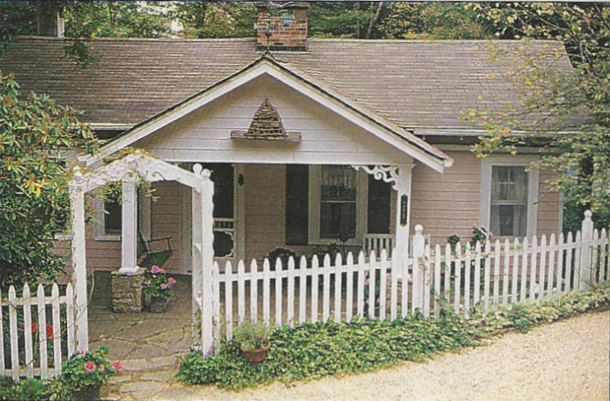

.png)
.PNG)
.PNG)
.PNG)
.PNG)
.PNG)
.JPG)
.JPG)
.PNG)
.PNG)


.png)
If you are a reader of the Mitford series of books, then you probably know that the author, Jan Karon left her successful work in advertising to walk in faith in a new career. That walk involved moving to the small mountain town of Blowing Rock, North Carolina – the place that eventually became the inspiration for the setting of her novels. She purchased a small blue cottage and painted it…pink.
from Victoria magazine, January 1998
It was there that the Mitford stories began – stories that were first run as a weekly column in her local newspaper, The Blowing Rocket. After many many rejections, Lion Publishing finally agreed to publish her work. Then she set about marketing it everywhere she could (without an agent.)
from Victoria Magazine, January 1998
Eventually, she did find an agent (or one found her 🙂 ), and that led to a 5 year contract with Penguin Books – and the Mitford series took off from there. But with their popularity came the popularity of the author and the town of Blowing Rock. Eventually fans of the series, anxious to meet the author, made finding privacy difficult for Ms. Karon. So she began to look for another place to call home. She started her search in the mountains of North Carolina but found nothing there that really touched her heart. So she turned to farmland in Virginia. In a small town outside of Charlottesville, she found a suitable place – a brick home built in 1816 set on 109 acres. It still had its virgin heart pine floors and original bricks that had been made on site.
It had been built by an architect who had worked with Thomas Jefferson on some buildings at the nearby University of Virginia. But…to say “it needed work” was an understatement. There were huge cracks in the plaster. All of the plumbing and electrical systems needed replacing, and the foundation was crumbling. It took Ms. Karon a year before she finally committed to the project in the fall of 1999. Then began the four years of detailed work by craftsmen to restore it to its former beauty, but what a beauty it is today! Just take a look at the entry hall with its French wallpaper.
The living room was once one of two parlors in the house. It and the dining room (the other parlor) have creamy painted molding and walls covered in a soft copper colored fabric.
Her favorite space in the house is the kitchen. It would be mine too with window seats, antiqued green painted cabinets, that long island, and even a fireplace!
Wander upstairs and you will find the master bedroom, a sitting room, and two bedrooms used for guests. wsj.com
wsj.com
Wander down to the basement and you will find many things original to the house – the brick walls, bars on windows and doors, and most notably – the original brick fireplace that was once used for cooking.
The 5,000 square foot home is listed on the National Register of Historic Places. Among the 10 buildings on the estate is a small chapel, a guest house that was once the outdoor kitchen, and a 3 bedroom farmhouse used as her office for writing.
She has chickens, dogs, and sheep on the farm there. That part reminds me of Meadowgate farm from the books, but the interior makes me think more of Miss Sadie’s gorgeous home. What do you all think?
It is a wonderful restoration – much more fancy than I could live in – but beautiful none the less! It is also quite a change from her sweet little pink cottage back in Blowing Rock, North Carolina where all the stories began. One of the articles I read about her new home stated that visitors could tour it. I am not sure exactly how one gets to do that. Perhaps one of us will have the opportunity to do so in the future. 🙂
Until then, just enjoy her books. And speaking of books, don’t forget about the giveaway going on for the next few days. Click here for all the details.
Simply leave a comment on any of the Loving Mitford posts, and you will be entered for the drawing. I will leave you with a question to get you started today:
If you could, would you rather build a new home from scratch or restore an old home?
Can’t wait to hear from you!
***Giveaway has closed. Winner was announced 2/7/13.***


.PNG)
Kelly,
I am on the board of the Friends of the Library for Burke County in Morganton, NC. Each year we have a luncheon in March and invite a visiting author. We would dearly love to have Jan Karon be our visiting author on March 19th, 2015. We have money to pay an author but we do not know the best way to contact her. We wrote to her publisher but did not hear back from them. Her new book will be out and she could do a book signing while she is here. We would love to decorate for her. We usually have about 150 people for the luncheon and we decorate twenty tables. I saw the website of the virtual tour of her home in Virgina. Her decor is beautiful and charming. I am sure she would love orchids, candles, teapots and cups and flowers in the tradition of the English garden. If you have suggestions of the best way to contact her please let me know. If she cannot come we would be disappointed but it would let us know to look for someone else. She is very popular in Morganton and has been to our book store “Muses” before but that bookstore in now closed. I hope you can give us some suggestions as to how to reach her.
Thank you very much. Joann Tanzer jo_tee@yahoo.com.
My desire is to get a message to Jan Karon. Is this the avenue? Having read all the Mitford series I was delighted to find this newest book. Such sweet wholesome characters and experiences. I wish I could be more like Fr Tim – accepting all just as they are; the recognition of who they are; no judgement. When I finished Somewhere Safe with Somebody Good, I felt the door is open for a sequel. Thank goodness. I enjoyed the opportunity this book afforded to review past events and the folks involved. I am grateful for Jan Karon’s talent – and messages. Thank you.
———————————————————————-
Hi Betty! I am afraid this is not a link to Ms. Karon. If I were you, I would try either her Facebook page (https://www.facebook.com/JanKaron) or through the Penguin books page (her publisher.) I don’t think Ms. Karon is even aware of the blog posts here on her homes. I loved her newest book too, and yes, I felt the door is definitely open for a sequel. Wasn’t it good to be back in Mitford with all our old friends? I too am grateful for her writing talent.
I hope you are having a splendid Sunday!
Kelly
I, at age 88, have just finished reading the 11 “Mitford Series”, and have started on the “Father Tim series. I read the books one after the other (from our Church library. In “These High Green Hills”, chapter 7, ‘Flying High’, I was taken back pleasantly to when i got my pilot license in a J-3 Piper Cub. I am a Baptist minister, and enjoyed all your Baptist characters, too. Thank you. Bob
Have just started reading your delightful book series and can’t stop reading them. They are so descriptive, just like being in the book and knowing each of the characters. Thank you for writing lighthearted stories. We all need these to stretch our minds and horizons. I’ve enjoyed seeing your homes and love the old restored home.
God bless, Deanna Stevens
Love the house AND her books. What a wonderful lady!
————————————————————-
I hope to be able to attend a book tour event where she is speaking when her new book comes out. I think it would be delightful to hear her in person! Glad you enjoyed seeing the house.
Kelly
I, too, have cherished Jan Karon’s books, The Mittford Series. I have copies of all and plan to keep them for the day when my daughters will have the time to read them. The person who introduced me to her books was a secretary/church administrator of the Episcopal Church we attend and have membership in. I was raised in the Presbyterian Church, initially. I find it amusing and somewhat coincidental to discover that Jan Karon did the reverse pattern, i.e. going from the Episcopal Church to the Presbyterian Church.
My husband delighted me with a wonderful trip to Blowing Rock a few years ago. It was for the single-minded purpose of being a “pilgrimage” to quench my insatiable desire for anything related to Jan Karon’s Mittford Series. Below are several pics, I’ve included via Desktop , hopefully you can open them with this method. We had lunch, of course, in the famous little diner where Father Tim had breakfast most mornings with his “cronies”. One can only use their imagination a little and step back in time to feel the presence of “Father Tim and the gang”!
You probably already know that Jan’s little Blowing Rock house is no longer pink. It was a very nice pale shade of yellow, last time we were there. If you would care to see a few of my trip photos, I would be happy to send them if you let me know your email address.
Kathi A.
Cincinnati OH
Feb. 5, 2014
———————————————————–
I do believe you are a big fan, Kathi! 🙂 Isn’t Blowing Rock the most charming of cities? I would love to see your photos from the trip. You can send them to kelly@talkofthehouse.com. Thanks for sharing!
Kelly
when I see photos of the author, all I see is Cynthia! 🙂 I wonder if she hammered the walls in the kitchen plaster to get that distressed villa look? 🙂 haha!!
cornflower blue eyes indeed! I’ll be et fer a tater is she ain’t Cynthia herself and done wrote herseff in as the wife of our Father Tim! hahaha!
she’d peer at me over her readers like she was examining a boiled ham if I asked, but I’d like me a signed copy of one of her books!
————————————————————
Bryan, you crack me up! I had wondered the very same thing about the distressed villa walls. 🙂 A signed copy of one of the books would truly be a treasure. Thank you for your very funny comment!
Kelly
New home, old style!
————————————————————-
That would be my choice too. 🙂
Kelly
The Mitford Series characters are my “friends” and I love all of the books!
————————————————————
I know! It does feel like all the characters are real and could be our friends. I even missed some of them.
Kelly
What a blessing Jan Karon’s books have been to me since my dear Mother passed them to me many years ago.
Hello,
I am a longtime fan of Jan Karon. She is an incredibly talented, warm and loving person who has shared her gifts through the writing of her series.
Is there any word on when we might be receiving her next work? I’m so eager to read her writing again.
Cookie
Love to restore an older home. Or have a newer home with “old” charm!
I have loved all of Jan’s books, my husband and especially love to listen to them when we are traveling. Makes the trip seem so much shorter! We have never been to blowing rock but it is on our list of places we want to visit. Thanks for the photos. Dot
———————————————————————-
Glad you liked all the photos Dot! If you enjoy Mitford, you will love Blowing Rock. I think you can visualize so much of the story just walking through that little town. Listening to the books on audio CD is a great idea for traveling! I will need to remember to do that the next time we take a long trip.
Kelly
I love the Mitford series and have read all of the books. Will there be another “reunion” such as a luncheon or tea? I missed the last one. Also, how do we go about contacting someone regarding a tour of the Charlottsville home? Thank you for your time.
Pam
———————————————————————-
Pam, I am afraid I do not know the answers to your questions. I searched and searched for information on another Mitford Days event in Blowing Rock but could find nothing. I also do not know if tours of the Virginia farm are still held, but here is an email address of someone who might can answer your questions: support@mitfordbooks.com Send an email there, and perhaps you will find out what you would like to know. Good luck!
Kelly
Just found your website-so nice to be among Mitford lovers. I’ve read the series at least 4 times-once a year. My mother and sister do the same. It’s like a renewal for me; I’m a “lapsed Catholic” and the love and acceptance in these books helps me center myself when life gets crazy.
Looking forward to whatever Jan writes!!!!
I was looking for Wes of Jan Karin’s third book when I found our article. Thanks for he pincers of her e home in VA. I’d le to be added to your news letters.
I just LOVE all Mittford books, every Father Tim – book and am so scared I would not know when a new book gets on the market as I am from South Africa!
Any idea when “Party of Four” the 3rd and final book in the Father Tim series will be released?
———————————————————————-
I am afraid I do not know that, and I have looked and looked for info on it. I have also heard Jan Karon mention a different name for the title (and I have heard Party of Four too.) I hope she has not retired from writing. That would be so sad.
Kelly
Thanks for the Jan Karon piece! I love all the photo’s and her 1st home pink and all! I hope she will keep writing her Mitford Books. I would like to know what will or has happen to Dooley.
———————————————————————-
I too would love to know what happens with Lace and Dooley! Surely Jan Karon is hard at work answering our questions in her next novel. 🙂 Kelly
There were two books in the father Tim series. HOme to Holly Springs and In the Company of Others. Burying Father Tim was written by another author. I have not seen anything about anymore Jan Karon books but would love to know if there are any in the works.
———————————————————————
I have read that the third book will be titled “A Family Faith,” and will end in a village in England. But I have heard nothing about a publishing date. Hopefully she will finish that one so that all of us lovers-of-anything- Mitford will get one more book to enjoy.:)
Kelly
I loved your books and will not get rid of them. I have read book one of Father Tim series and I would like to know if there are any other books before the one Burying Father Tim. Someone said there was and I can’t find it. Please let me Pleaseeeee.
Glad you enjoyed the Mitford series of posts. Sadie was such a wonderful character in those books. Wasn’t her love story so sweet? I am wondering if Jan Karon is writing at all anymore. I have not seen any information about it anywhere.
I read the whole series twice, and all the other books that go along with it. Sadie was my fav. Love her. Waiting for the third in the Father Tim series to come out. The first one was awesome. Enjoyed your post. Thanks!
Hmm, since I lived in an old home growing up, & then again in the first few years of marriage, there are things that I loved & didn’t love about them. I now have a home we built, & again theres’s that this is great, & why didn’t I do it this way instead. So I guess, I could go either way now. Would love to restore a victorian, or craftsman, but if I ever do build again I do have a “must have list, ” that I won’t budge from…I finally figured out what Our needs to be.
Ooohhhh, that’s a hard question to answer. There are so many things about older homes that I love. I am in love with Victorian homes. They are so romantic! However, it may be easier to just start from scratch rather than tear down & redo everything. Lol. I would do whichever I have the chance to do, tho.
I started the Mitfird series and finished book one. I’m on to the next and love everything about these sweet characters and the town. I love old homes. I live in a 1920’s cottage now. I love the character and though its a little breezy from time to time it is cozy and comfortable and I love it more then the couple of new homes I’ve lived in and built.
Your house is beautiful and also looks so cozy and comfortable. I love your blog!!!
Because of all of the issues with old houses, if money was no object I would build a new “old” house. I love this post! I really enjoyed looking at Jan Karon’s houses, and the pictures of the interiors. Thanks!
Wow! What a beautiful place Ms. Karon has! I was born and raised in VA and have had the pleasure of seeing Thomas Jefferson’s great lawn and buildings at UVA. I married a Nebraskan and have lived on a farm in Nebraska almost all of my married life. I love to refinish (wooden) furniture, so of course my choice would be to remodel an older house, which by the way, is what I am presently doing. You can’t buy the character of an old house but they do give you quite a few surprises when you knock down the plaster!:)
Loved the tour and will be, again, passing this on to my friends who are such Mitford fans! The home is beautiful but I may have decorated a touch more simply. Yes, it was quite a change from the cottage where it all began – along the lines of Susan Branch on Martha’s Vineyard. Homes, we love them don’t we? I’ve redone a three level condo, and pretty much done over a new, tract house, and grown up in a century old homestead, but am always looking forward (hopefully) to what the next remodel might be. The colonial period is my fave and I think that affects me in my decorating sense, especially in color and style choice. Wishing I would be touring all these Jan Karon homes soon, April’s such a nice month in Virginia and the Carolinas.
I would like a new home made to look like an old home!
I was so excited to see Jan’s new home, it is beautiful. I have read all the Mitford series and the Father Tim novels. I contine to go back to them over time as a source of inspiration. My husband and I retired to a small town in Mississippi several years ago and are members of the Episcopal Church, so Mitford is like home to us.
I love your blog and all the things I learn from you!Keep up the good work.
In our 28 years of marriage, my husband and I have lived in 4 70’s ranch houses that we completely remodeled and one new home–I like the 70’s houses better except the closet space. I like Jan’s house, but I would rather see pictures of the inside of that pink cottage. It is so cute and cozy looking!
I love the Mitford series. I listened to them while gardening!
Building or rebuilding? Either depending on quality and condition of existing home.
My husband and I have lovingly restored a few homes over the years. We just love the history and love that has gone into the homes over the years.
Oh yes, old homes are money pits, but for some reason I still love mine. My perfect home (since we are just dreaming) would be an older home that someone had already restored to be everything I want. HA! I’m not hard to please, am I?
Love Ms. Karon’s big house, even though it isn’t my style. I actually love her basement the best. LOL. I picture Cynthia’s little yellow house looking like this, only on a smaller scale. Thanks for sharing this with us.
I love old houses, always have. But, now that I am older, I would love a new house that looks like an old farm house. One day driving with my granddaughter I said, I would love a farm. My then 6 year old sweety said, Gran farms are a lot of work!
Out of the mouths of babes…
Kelly,
I have only loved in new homes. My husband is a contractor/carpenter and we have built two homes for ourselves in 14 years. He would build for us more often if I would let him. I do love to see older houses restored and turned into someones new to them home. Jan Karon’s basement fireplace is so cozy and warm looking. Thanks for sharing it with us.
Oh it is beautiful! I would love to have a big, old house! A life long dream that I know will never come true. But I too have plans that I drew on an scrap paper that I have saved. It would be wonderful to see it built
I started reading the Mitford series again after you began this post. Just love Emma!
I HEART the memories, character and craftsmanship of an older home. I would restore ONLY if money was no object…..this house was built in the 1980’s and I know how much we have already put into it, I can’t imagine adding 100 more years to its age!!! Loving this series!!!
If money were no object and great contractors were available, I’d much rather restore some fabulous old home.
Thanks so much for sharing this series of posts and pics. My mother-in-law gave me one of the books for Christmas one year, and I loved it. I haven’t read any others, but only because I don’t have them. Maybe I will check the library during the next visit…
I would like a new home with “old” accents – floors, lighting, doors, etc My husband and I are recently retired and plan to relocate to a ranch home. Love your blog!
Kelly,
I think the new house seems to suit Jan Karon’s style…she seems a little more formal from what I’ve read of her. I’d take the cottage any day and South Carolina. That said, I would hate to walk out of my home to a hoard of people wanting to see where I live! lol (maybe that’s not such a terrible problem if you need fans to help with your chosen profession).
Karen
I enjoyed seeing her home. It is beautiful but much too fancy for me to live in. I would love to build a new home that looked old. I love the cottage look and my husband says our next home will be small and all on one level. As my parents get older and have special needs I do see the need for a smaller and more efficent home on one level. I think you have a beautiful home!
I discovered your blog just a few months ago. I can’t tell you how much I loved your holiday decorating. I really want to thank you for introducing me to “Shepherd’s Abiding”. It warmed my heart and I guarantee it will be a must read every Christmas.
We bought our 115 year old home 12 years ago when I was 20. I wouldn’t give up my 10 ft ceiling, standard 8 in baseboards and beautiful hand craved front door for anything. I love the character and heart an old home has.
Just loved seeing the beautiful photos of Jan Karon’s new Virginia home. We have retired and moved to a log cabin about a 30 minute drive from Blowing Rock. We can see it and Grandfather Mountain from our back porch. Loved all the posts you have done of our beautiful Blue Ridge Mts. We go to Blowing Rock once a week to “soak up the atmosphere” and have a sandwich lunch at the Market ( the pretty gas station you had in your post) We attend the Episcopal church called the “Church of the Frescoes” where Ben Long painted frescoes in the Italian style and used local people as the disiples in his painting of the Last Supper. If you get back up this way, they are in West Jefferson and Glendale Springs N.C.
Kelly, you are such a wonderful researcher and we all benefit from that. Jan Karon’s home is gorgeous and the setting makes it even better.
If I had a choice, I would choose a new home built to look ancient. My dad lives in a beautifully restored 101 year old house. It definitely has character that you rarely see. However, it isn’t ever quite cool enough or warm enough. Those gorgeous old glass windows let lots of air in. And the painting outside never stops. If we are dreaming, I want my new/old house set in a beautiful old neighborhood or on the middle of 80 gorgeous acres.
Probably build a new house but have vintage character! That way it wouldn’t be as much upkeep. Our house is only 14 yrs old and it seems like we are having to replace or fix something all the time! I couldn’t imagine having to keep up with an 100 yr old house!
I would love to restore an old home if money were no object. We looked at buying a house in the historic district here in Decatur but just decided it would be too much money for us as they require constant care and attention.
I’m not sure I would enjoy doing either of the above (too many choices to make with new homes, as well as old ones), but, if I had to choose, I’d probably go with the new. I drew up house plans (on a legal pad, no less) when I was barely in my 20’s and it would be quite exciting to see it come to life.
I would rather build a new home with the character of an older home. I would want to have large rooms, high ceilings, and huge closets.
Would love to build a house that looks old.
I would like a new home build to look like it was old.
I have never had a new home just a “new to me” home. I love the character of an older home so I would have to choose an older home.
That’s a toss up….I love new homes and how clean and fresh they are but the older homes have so much character!
Restore an old home!!! (If I had the money – old homes are MONEY PITS! I know, I have one now)
That is a fantastic restoration of the historic Virginia home but that little cottage in Blowing Rock is the coziest little place! Any more pics of the interior? I wonder what it looks like now…